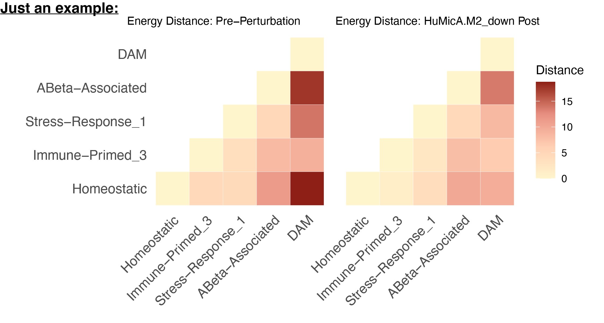

Perturbation Assessment: Distance-based characterization of cellular state similarity
distance_assessment.RmdCompiled: 2026-09-10
Source: vignettes/distance_assessment.Rmd
Introduction
The perturbation vignettes end where this one begins. Once
ModulePerturbation() has produced a perturbed assay, the
natural next question is not what changed in the genes but
what changed in the relationships between cell states:
did the perturbation pull two populations toward each other, push them
apart, or leave the landscape untouched?
This tutorial answers that with distance-based metrics. In particular, you will see how to:
- Choose a distance metric — mean-based, distribution-aware, or rank-aware, and what each one can and cannot detect
-
Project a perturbed assay into a fixed PCA
reference with
ProjectPCAReference(), so that pre- and post-perturbation distances are measured on the same ruler - Read the delta distance matrix, which is the interpretable readout for a low-iteration module perturbation
Prerequisite: Complete the Basics — Simulation vignette first, and have at least one perturbed assay in your Seurat object. Familiarity with Seurat reductions and assays is assumed.
What you get: a state × state distance matrix under each condition, and the change between them. Runtime: ~2–5 min for a 20k-cell object, most of it the reference PCA. The one rule: fit the PCA once, on the unperturbed assay, and project every perturbed assay into it.
Distance-based characterization of cellular state similarity
Each cell is a gene expression vector (gene in cell ), where each dimension is the expression level of one gene. Cells are grouped into predefined states — clusters, annotated cell types, or any grouping you supply — and distances are computed pairwise between states, comparing two sets of cells and drawn from the same assay and feature space.
The comparison is not restricted to perturbed versus control. Any pair of cellular states works: control versus disease-associated, one cell type versus another, or any other state-specific contrast.
For each pair of states, distances are calculated separately under two conditions:
- The original assay — the baseline biological, disease-associated, or otherwise unperturbed transcriptional landscape.
- The post-perturbation condition — the same states after in-silico module perturbation.
This yields condition-specific state–state distance matrices describing the geometry of transcriptional relationships between cell states before and after perturbation. Throughout, distances are interpreted as measures of relative similarity or dissimilarity between cellular states, rather than absolute perturbation effect sizes (Shi & Morabito et al., 2026).
One constraint drives the entire implementation: all distances must be calculated from expression values drawn from the same assay and feature space, ensuring direct comparability across states and across conditions. The fixed-basis projection below is what that requirement looks like in code.
Choosing a distance metric
Several complementary metrics are available through
ComputeDistance(), each capturing a distinct aspect of
transcriptional similarity. They are not interchangeable — pick by what
kind of difference you expect the perturbation to produce.
Mean-based: Euclidean distance
Quantifies global shifts in average gene expression between two states. With and the mean gene expression vectors of the two populations:
The distance is computed between state centroids. It captures coordinated, population-wide transcriptional change, but does not account for higher-order distributional differences such as variability or multimodality.
Distribution-aware: energy distance
Compares full empirical distributions of cells based on pairwise distances between individual cells, rather than summary statistics. Let and denote expression vectors of individual cells sampled from states and :
where the three terms are
is the mean pairwise distance between the two states’ cell distributions; and quantify the within-state compactness of each state. and are the cell counts. Energy distance is sensitive to differences in mean, variance, and higher-order distributional structure, which makes it well suited to heterogeneous transcriptional responses where only a subpopulation reacts (Peidli et al., 2024; Heumos et al., 2026).
This is the default choice for module perturbation, and the metric used throughout the rest of this vignette.
Rank-aware: Spearman distance
Captures monotonic similarity between transcriptional profiles independent of absolute scale. Spearman’s rank correlation is computed between the mean expression vectors and converted to a distance:
where
Ranks are computed across genes. Sensitive to concordant changes in gene ordering between states and invariant to absolute scale, but blind to differences in variance or higher-order distributional structure.
Which to use
| Metric | method = |
Captures | Misses |
|---|---|---|---|
| Euclidean | "euclidean" |
Coordinated global mean shifts | Variance, multimodality, subpopulation responses |
| Energy | "edist" |
Mean, variance, higher-order structure; heterogeneous responses | Nothing distributional; costs pairwise distances |
| Spearman | "spearman" |
Monotonic reordering of the expression profile; scale-invariant | Variance, higher-order structure, magnitude |
Run more than one when the result matters. A perturbation that moves the Euclidean distance but not the energy distance shifted the centroid uniformly; one that moves energy but not Euclidean changed the shape of the distribution — typically a subpopulation responding while the bulk does not. That contrast is informative, and it is invisible from any single metric.
Why the fixed basis matters
All distances must come from the same feature space. In practice that means the PCA basis, and it is easy to violate without noticing.
If you run FindVariableFeatures → ScaleData
→ RunPCA separately on the perturbed assay, two things
break:
-
Different coordinate systems. Each PCA picks its
own axes.
post − prethen compares distances measured in two unrelated spaces, so the difference is meaningless even when the perturbation did nothing. -
ScaleDatadivides out the effect. It z-scores each gene using that assay’s own standard deviations. A perturbation that changes a gene’s variance gets renormalized away — exactly the signal you were trying to measure.
ProjectPCAReference() avoids both: it applies the
reference loadings and the reference gene means/SDs to the perturbed
data. Same axes, same scaling, so the two conditions are directly
comparable and post − pre is interpretable.
Setup
Libraries and parameters
You need a Seurat object with an RNA assay carrying both
counts and data layers, one or more perturbed
assays created by ModulePerturbation(), and a grouping
column that is a factor — the level order becomes the
state order in every matrix and figure.
library(Seurat)
library(Matrix)
library(tidyverse)
library(reshape2)
library(compact)
groupby <- "Annotation_sub"
dims_use <- 1:30
custom_order <- levels(seurat_mg$Annotation_sub)
stopifnot(!is.null(custom_order)) # must be a factor, not character
fig_energydis <- file.path(fig_dir, "Energydistance")
dir.create(fig_energydis, showWarnings = FALSE, recursive = TRUE)
perturbation_names <- grep("^HuMicA\\.M[0-9]+_(up|down)$",
names(seurat_mg@assays), value = TRUE)
perturbation_namesSupport checks
Two pre-flight checks. Neither is part of the analysis; both take seconds and both catch failures that otherwise produce clean-looking, entirely artifactual results.
Baseline normalization
ProjectPCAReference() requires that the query layer
already uses the same normalization definition as the reference layer —
it never calls NormalizeData(), and it does not check this
precondition. Verifying it is the caller’s job, and this is the
check.
ModulePerturbation() rebuilds its own baseline
internally with a fixed log-normalization
(scale.factor = 1e4). The check does not test that
reimplementation — it tests the provenance of your
RNA@data layer: was it produced by log-normalizing
the counts currently in the object, at that scale factor?
Those are different claims, and the second one fails in ordinary
situations: a Scanpy- or h5ad-derived data layer, a
different scale factor, SCTransform output, or genes/cells dropped
after NormalizeData() was run, so that
colSums(counts) no longer matches the library sizes used at
normalization time. When it fails, every post-perturbation coordinate
carries a per-cell offset unrelated to the perturbation.
cts <- GetAssayData(seurat_mg, assay = "RNA", layer = "counts")
dat <- GetAssayData(seurat_mg, assay = "RNA", layer = "data")
recon <- compact:::log_normalize(cts, Matrix::colSums(cts), scale.factor = 1e4)
cat("max |RNA@data - log_normalize(RNA@counts)| =", max(abs(dat - recon)), "\n")| Result | Meaning |
|---|---|
< 1e-5 |
Fine. Continue. |
| Anything larger | Run NormalizeData(seurat_mg, assay = "RNA") and
regenerate the perturbed assays, then re-check. |
Perturbation support
Confirms the perturbation moved the genes it was supposed to move, and only those.
pert_name <- "HuMicA.M2_down"
cur_mod <- "M2"
modules <- GetModules(seurat_mg)
mod_genes <- intersect(subset(modules, module == cur_mod)$gene_name,
rownames(seurat_mg[["RNA"]]))
obs <- GetAssayData(seurat_mg, assay = "RNA", layer = "data")
per <- GetAssayData(seurat_mg, assay = pert_name, layer = "data")
n_changed <- sum(rowMeans(as.matrix(per - obs)) != 0)
cat(n_changed, "genes changed; module has", length(mod_genes), "\n")n_changed |
Meaning |
|---|---|
≈ length(mod_genes) |
Expected. Continue. |
Noticeably larger, but well below nrow(seurat_mg)
|
More was perturbed than this module. Either
ModulePerturbation() was called with a broader gene set
than cur_mod, or an earlier perturbation step already
modified the assay you are comparing against and the two effects are
stacked. Check the assay’s provenance before interpreting anything. |
≈ nrow(seurat_mg) |
Every gene moved — a global offset, not a perturbation. Wrong assay, or the normalization check above was skipped. |
0 |
Nothing was perturbed. Wrong assay name, or the module’s genes are
absent from rownames(seurat_mg[["RNA"]]). |
For the second case, list the genes that moved but do not belong to the module — that usually names the culprit immediately:
changed <- names(which(rowMeans(as.matrix(per - obs)) != 0))
unexpected <- setdiff(changed, mod_genes)
length(unexpected)
head(unexpected, 20)
# are they members of another module?
subset(modules, gene_name %in% unexpected) %>% dplyr::count(module)If they cluster in one other module, a second perturbation was applied to that module. If they are scattered across all modules with no pattern, suspect a global offset instead.
Section 1: Baseline and projected distance matrices
Step 1 — Fit the reference PCA once
DefaultAssay(seurat_mg) <- "RNA"
seurat_mg <- FindVariableFeatures(seurat_mg, selection.method = "vst",
nfeatures = 2000, verbose = FALSE)
hvg_fixed <- VariableFeatures(seurat_mg)
seurat_mg <- ScaleData(seurat_mg, features = hvg_fixed, verbose = FALSE)
seurat_mg <- RunPCA(seurat_mg, features = hvg_fixed,
reduction.name = "pca", reduction.key = "PC_",
npcs = 50, verbose = FALSE)Compute the baseline (original-condition) distance matrix. This is computed once and reused for every perturbation:
df_edist_original <- ComputeDistance(seurat_mg, groupby, "pca",
method = "edist", dims = dims_use)
df_pre <- df_edist_original[custom_order, custom_order]
write.csv(df_pre, file.path(fig_energydis, "edistance_original_RNA_pre.csv"),
quote = FALSE)Note the scale.max you used (Seurat’s
ScaleData default is 10). The same value must
go to ProjectPCAReference() in the next step.
Step 2 — Project one perturbation
Work through a single perturbation and confirm it behaves before looping over all of them.
pert_name <- "HuMicA.M2_down"
out_dir <- file.path(fig_energydis, pert_name)
dir.create(out_dir, showWarnings = FALSE, recursive = TRUE)ProjectPCAReference() applies the reference loadings and
the reference per-gene mean/SD to the query assay’s data
layer, then stores the result as a new DimReduc — no
refitting anywhere.
red_post <- paste0(pert_name, "_pca_fixed")
seurat_mg <- ProjectPCAReference(
seurat_mg,
query_assay = pert_name,
reference_assay = "RNA",
reference_reduction = "pca",
dims = dims_use,
layer = "data",
scale.max = 10, # MUST match your ScaleData() call
reduction.name = red_post, # set explicitly, don't rely on the default
overwrite = TRUE,
verbose = TRUE # leave TRUE on the first run — see below
)Arguments worth setting deliberately:
| Argument | Why |
|---|---|
scale.max = 10 |
Must match the ScaleData() call in Step 1. Seurat clips
values greater than scale.max (upper tail only);
pass Inf if you scaled without clipping. A mismatch clips
the projection differently from the reference and produces a large,
structureless delta. |
reduction.name |
Defaults to paste0(query_assay, "_pca_fixed"). Set it
yourself so downstream code does not depend on the default. |
overwrite = TRUE |
Defaults to FALSE. Without it, a second run reuses the
existing reduction and your delta comes back as exactly zero. |
dims |
Defaults to NULL, meaning all stored loading columns.
Pass dims_use so the projected subspace matches the one
df_pre was computed in. Must be a consecutive
leading sequence — Seurat reductions reject skipped or
reordered PCs, so 1:30 is valid and
c(1, 5, 10) is not. |
verbose = TRUE |
Prints the validation results described below. Keep it on for the
first perturbation; switch to FALSE inside the loop once
you trust the setup. |
unchanged.cells |
Optional character vector of cells you know are
unchanged between reference and query. Their expression
and projected coordinates are then checked to agree within
tolerance. This is an assertion, not a shortcut — it
catches a perturbation that leaked into cells it should not have
touched. |
tolerance = 1e-06 |
Maximum allowed absolute error, both for the internal reconstruction
validation and for the unchanged.cells check. |
block.size = 5000L |
Query cells projected per block. Lower it if you hit memory pressure. |
What the function validates for you
ProjectPCAReference() reconstructs the reference scaling
parameters from the reference_assay data
layer, then requires that the reconstructed scaled values and PCA scores
reproduce the stored scale.data and reference embeddings
within tolerance. This deliberately
rejects PCA models built with incompatible
preprocessing — regression in ScaleData(), for instance —
rather than silently producing a non-comparable projection. It refits
nothing and modifies neither assay nor the original reduction.
Projection parameters and validation results are stored in the new reduction:
seurat_mg[[red_post]]@misc$fixed_referenceNote what this validation does not cover: it checks
the reference side. It does not verify that the query assay’s
data layer uses the same normalization definition as the
reference — that precondition is the caller’s responsibility, and it is
exactly what the support checks above are for.
For a perturbation that was meant to be restricted to a subset of cells, assert it here:
seurat_mg <- ProjectPCAReference(
seurat_mg,
query_assay = pert_name,
reference_assay = "RNA",
reference_reduction = "pca",
dims = dims_use,
reduction.name = red_post,
unchanged.cells = WhichCells(seurat_mg, expression = condition == "control"),
overwrite = TRUE
)Step 3 — Compute, save, and plot
df_post <- ComputeDistance(seurat_mg, groupby, red_post,
method = "edist", dims = dims_use)
df_post <- df_post[custom_order, custom_order]
df_diff <- df_post - df_pre
write.csv(df_post, file.path(out_dir, paste0("edistance_", pert_name, "_post.csv")),
quote = FALSE)
write.csv(df_diff, file.path(out_dir, paste0("edistance_diff_", pert_name, ".csv")),
quote = FALSE)Reshape to long format, so all three matrices land in one tidy table:
to_long <- function(df, nm) {
x <- reshape2::melt(as.matrix(df), varnames = c("group_1", "group_2"), value.name = nm)
x$group_1 <- as.character(x$group_1)
x$group_2 <- as.character(x$group_2)
x
}
edist_long <- to_long(df_post, "energy_distance_post") %>%
left_join(to_long(df_pre, "energy_distance_pre"), by = c("group_1", "group_2")) %>%
left_join(to_long(df_diff, "energy_distance_diff"), by = c("group_1", "group_2")) %>%
mutate(perturbation_name = pert_name) %>%
select(perturbation_name, group_1, group_2,
energy_distance_pre, energy_distance_post, energy_distance_diff)
write.csv(edist_long, file.path(out_dir, paste0("edistance_long_", pert_name, ".csv")),
row.names = FALSE, quote = FALSE)Plot the two conditions side by side:
custom_palette <- colorRampPalette(c("#FFF5CD", "#FFCFB3", "#E78F81", "#8E1F16"))(4)
HeatmapDistance(
df_original = df_pre,
df_perturbed = df_post,
title_original = "Energy Distance: Pre-Perturbation",
title_perturbed = paste0("Energy Distance: ", pert_name, " Post"),
custom_palette = custom_palette,
custom_order = custom_order
)Example

The two panels will look near-identical. That is the expected result for this design, not a null result — Section 2 explains why and gives the readout that resolves it. Do not read “no effect” off this figure.
Loop over all perturbations (click to expand)
Once one perturbation behaves, run the rest. The reference PCA and
df_pre stay outside the loop: recomputing
either per perturbation wastes time, and refitting the PCA reintroduces
the problem described in the Introduction.
all_edist_results <- list()
for (pert_name in perturbation_names) {
message("Energy distance for: ", pert_name)
out_dir <- file.path(fig_energydis, pert_name)
dir.create(out_dir, showWarnings = FALSE, recursive = TRUE)
red_post <- paste0(pert_name, "_pca_fixed")
seurat_mg <- ProjectPCAReference(
seurat_mg,
query_assay = pert_name,
reference_assay = "RNA",
reference_reduction = "pca",
dims = dims_use,
layer = "data",
scale.max = 10,
reduction.name = red_post,
overwrite = TRUE,
verbose = FALSE
)
df_post <- ComputeDistance(seurat_mg, groupby, red_post,
method = "edist", dims = dims_use)
df_post <- df_post[custom_order, custom_order]
df_diff <- df_post - df_pre
write.csv(df_post, file.path(out_dir, paste0("edistance_", pert_name, "_post.csv")),
quote = FALSE)
write.csv(df_diff, file.path(out_dir, paste0("edistance_diff_", pert_name, ".csv")),
quote = FALSE)
all_edist_results[[pert_name]] <-
to_long(df_post, "energy_distance_post") %>%
left_join(to_long(df_pre, "energy_distance_pre"), by = c("group_1", "group_2")) %>%
left_join(to_long(df_diff, "energy_distance_diff"), by = c("group_1", "group_2")) %>%
mutate(perturbation_name = pert_name) %>%
select(perturbation_name, group_1, group_2,
energy_distance_pre, energy_distance_post, energy_distance_diff)
write.csv(all_edist_results[[pert_name]],
file.path(out_dir, paste0("edistance_long_", pert_name, ".csv")),
row.names = FALSE, quote = FALSE)
ht <- HeatmapDistance(
df_original = df_pre,
df_perturbed = df_post,
title_original = "Energy Distance: Pre-Perturbation",
title_perturbed = paste0("Energy Distance: ", pert_name, " Post"),
custom_palette = custom_palette,
custom_order = custom_order
)
pdf(file.path(out_dir, paste0("edistance_after_", pert_name, ".pdf")),
width = 8, height = 4)
print(ht)
dev.off()
}
edist_all <- bind_rows(all_edist_results)
write.csv(edist_all, file.path(fig_energydis, "edistance_all_perturbations.csv"),
row.names = FALSE, quote = FALSE)One combined table at the end, one folder of figures per perturbation.
Section 2: Delta distance
The change in the geometry is the measurement. Neither condition on its own is.
This follows from how ModulePerturbation() works. At a
small number of iterations the perturbation is a targeted,
low-magnitude, network-local displacement: the shift propagates
through the co-expression network and lands most heavily on hub genes —
the highly connected, high-kME members of the module — rather than
spreading evenly across the transcriptome. Two consequences, and they
point in opposite directions:
- Cell state transition is estimable. The perturbation moves cells in a consistent direction in state space, and the direction and relative magnitude of that movement between states are exactly what the distance matrices capture.
- Transcriptome-wide change is limited by design. A few hundred genes move, most of them modestly. The total displacement is small relative to the transcriptional differences that separate cell states in the first place.
So the absolute distance matrices under either condition remain dominated by cell-state identity, to almost the same degree. Their difference is where the perturbation lives:
which is the edistance_diff_*.csv you already saved.
The practical consequence is the figure. Energy distances between
distinct cell states are tens of units, and those values set the color
scale for both panels of HeatmapDistance(). A pair that
shifts by 0.5 against a baseline of 40 moves the color by roughly 1% of
the scale — present, invisible. Plotting the delta puts the scale where
the signal is. HeatmapDistanceDiff() renders it on a
diverging scale centered at zero, so the scale is set by the size of the
change rather than by the size of the distances.
Because the diff matrices are already on disk, this is a replot loop — no recomputation, so it is cheap to iterate on the scale settings:
for (perturbation_name in perturbation_names) {
message("Replotting delta heatmap for: ", perturbation_name)
out_dir <- file.path(fig_energydis, perturbation_name)
perturbed_csv <- file.path(out_dir, paste0("edistance_diff_", perturbation_name, ".csv"))
if (!file.exists(perturbed_csv)) {
warning("Missing file: ", perturbed_csv)
next
}
df_edist_diff <- read.csv(perturbed_csv, row.names = 1, check.names = FALSE)
df_edist_diff <- as.matrix(df_edist_diff)
# reorder again just to be safe — read.csv does not preserve factor levels
df_edist_diff_reordered <- df_edist_diff[custom_order, custom_order]
p <- HeatmapDistanceDiff(
df_edist_diff_reordered,
custom_order = custom_order,
title = paste0("Delta energy distance: ", perturbation_name),
limits = c(-1, 1),
scale_mode = "auto" # or "symlog"
)
pdf(file.path(out_dir,
paste0("edistance_diff_", perturbation_name, "_post_minus_pre.pdf")),
width = 8, height = 4)
print(p)
dev.off()
}Choosing the scale
| Argument | When to use it |
|---|---|
scale_mode = "auto" |
Default. Scale set from the data range. Start here. |
scale_mode = "symlog" |
One or two pairs dominate and flatten everything else. Symmetric-log compresses the extremes so mid-range structure stays visible. |
limits = c(-1, 1) |
Fix the scale across perturbations so panels are comparable to each other. Values outside the range clamp. |
min_limit = ... |
Floor the scale so trivial differences render flat instead of being
auto-magnified. Base it on the baseline,
e.g. 0.05 * median(df_pre[upper.tri(df_pre)]). |
Set limits explicitly whenever several perturbations
appear side by side. Under "auto" each panel gets its own
scale, and a weak perturbation looks as strong as a real one.
Reading the result
Read the delta matrix, not df_post.
-
Diagonal is 0 by construction in both conditions.
If it is not, the projection is wrong — check
scale.maxand the support checks. - Direction before magnitude. Because the perturbation is a small, hub-weighted displacement, the interpretable signal is which states moved toward or away from which, not how many units they moved.
- Positive off-diagonal — the perturbation pushed those two states further apart.
- Negative off-diagonal — it pulled them together. For a module down perturbation this is the common outcome when the module is a marker program for one of the two states: knocking it down makes that state look more like the others.
- Row and column structure matters more than any single cell. A perturbation with a real, specific effect shows one state’s whole row shifting in a consistent direction. Scattered ±0.01 values across the matrix are noise.
-
Magnitude is only meaningful next to the baseline.
Compare each delta against the corresponding cell in
df_pre: 0.5 on a baseline of 40 is a ~1% shift. Report both, and keep the framing from the Introduction — these are relative similarity measures, not absolute perturbation effect sizes.
Small deltas are the expected scale for this design, not a failure. A
low-iteration module perturbation displaces a few hundred genes,
weighted toward hub genes, against a basis whose leading PCs are
dominated by cell-state identity — so the delta heatmap, not the
pre/post pair, is the figure to interpret. If you need larger absolute
movement, raise n_iters in
ModulePerturbation() rather than reading harder into a flat
pre/post panel.
Troubleshooting
| Symptom | Cause | Fix |
|---|---|---|
post − pre is huge everywhere, including the
diagonal |
Perturbed assay normalized differently from
RNA@data
|
Rerun the baseline normalization check |
| Every gene shows a nonzero shift | Wrong assay, wrong module, or a global offset | Rerun the perturbation support check |
post − pre is exactly 0 |
ProjectPCAReference() reused an existing reduction |
Set overwrite = TRUE
|
| Delta is large but structureless |
scale.max differs from the ScaleData()
call |
Match the two values |
| Delta heatmap is all one color |
"auto" scale stretched by one outlier pair |
scale_mode = "symlog", or set limits
|
| Heatmap rows are in the wrong order |
custom_order lost after read.csv
|
Re-index with [custom_order, custom_order]
|
| Distances change when you rerun | PCA refit somewhere in the loop | Confirm RunPCA is called exactly once, outside the
loop |
Summary
- Metric choice determines what kind of perturbation effect is detectable. Energy distance is the default for module perturbation because it responds to distributional change, not only to centroid shifts.
-
A fixed PCA basis is what makes pre and post
comparable.
ProjectPCAReference()reuses the reference loadings and scaling parameters, and validates that the reference PCA is reconstructible before projecting. - Two support checks — normalization provenance and perturbation support — separate a real null result from a broken setup.
- The delta matrix is the readout. A low-iteration module perturbation is a hub-weighted, network-local displacement; the absolute matrices stay dominated by cell-state identity, and the difference between them carries the signal.
References
- Shi & Morabito et al. compact: Unlocking a functional understanding of cell state dynamics via in silico gene network perturbations. bioRxiv, 2026.
- Peidli et al. scPerturb: harmonized single-cell perturbation data. Nature Methods 21, 531–540 (2024).
- Heumos et al. Pertpy: an end-to-end framework for perturbation analysis. Nature Methods 23, 350–359 (2026).